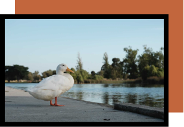
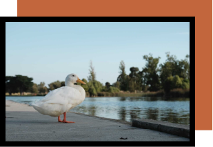

My name is Jo Zhou. Prior to UX Design, I’ve worked in market research, sales & marketing, early childhood education and music education.
Everything I’ve done has been in pursuit of understanding people more deeply and fostering moments of empathy.
As a human, I’m frequently spotted staring at my 8 birds, talking about JDM, taking my FujiFilm everywhere with me and talking about skewered bbq. 🍡
How can we encourage people to slow down a bit, to listen to their inner voices?
How can we contribute to a world that is with more warmth and more meaningful connections?
How can we help people who struggle to discover their true passions?
How can we lift up the unheard stories of struggle, of shame, of triumph, of process?
I have always been inspired by people.
Throughout my work and my interests outside of work, I saw a recurring pattern in myself of wanting to solve problems, to understand, and to create and share experiences of delight.
Design asks how to solve a problem.
UX asks how people are affected by the problem.
UX Design is when solutions reflect the context— the problem, the users, the product. People refine design, designs refine people.
It’s a symbiotic relationship.
Strategy: Identity, voice, content, marketing, social, branding, communication
Design: User research, user interviews, user observations, user scenarios, empathy map, user flow, ux writing; product analysis & critiques, card sorting, information architecture, user flows, idea sketches, wireframing, prototyping, usability testing, product design, interface and interaction design
Organizational: Project management, feedback, design critique, positive reinforcement, relationship building and maintainance, speech and presentation & demonstration
Marketing/Creative: Campaign development and execution, partnerships, fostering key relationships, cross-functional collaborations
Design: Figma, Zeplin, Miro, Webflow, Invision, Photoshop, Wix, Behance, Squarespace.
Code: Github, CodePen, Visual Studio, basic HTML, CSS, JavaScript, jQuery, Bootstrap.
Project Management: Trello, Google drive.


 
